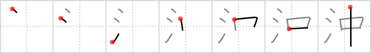

沖
← →
open sea

Reading:
On-Yomi: チュウ — Kun-Yomi: おき、おきつ、ちゅう.する、わく
Heisig story:
This kanji could hardly be simpler. The key word open sea readily suggests being out in the middle of a great body of water .Thinking of it in this way should avoid confusion with the kanji for "open," which we will meet later on.
Koohii stories:
1) [zdnks] 31-10-2007(141): Open sea is a lot of water in the middle of nowhere.
2) [mdspencer] 9-3-2009(69): Water in the middle of the ocean is referred to as open sea.
3) [akimoto] 21-6-2006(23): Out in the water, in the middle of the ocean, is open sea with no land for miles and miles.
4) [DrWarrior12] 4-8-2007(18): OpIN sea.
5) [Ningen] 30-7-2008(5): When you are on the OPEN SEA, you are completely in the middle of the water.